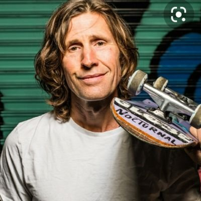
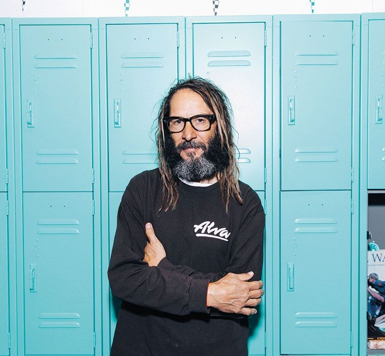
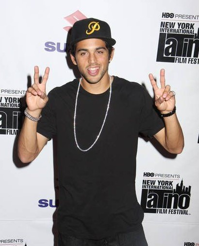
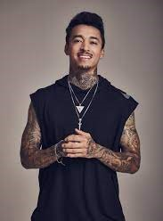
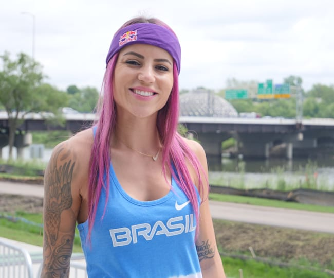

Anthony Frank Hawk (born May 12, 1968), nicknamed Birdman, is an American professional skateboarder, entrepreneur,
and the owner of the skateboard company Birdhouse. A pioneer of modern vertical skateboarding, Hawk completed the
first documented "900" skateboarding trick in 1999. He also licensed a skateboarding video game series named after him published by
Activision that same year. He retired from competing professionally in 2003 and is regarded as one of the most influential skateboarders of all time.

Rodney Mullen
John Rodney Mullen (born August 17, 1966) is an American professional skateboarder who practices freestyle skateboarding and street
skateboarding. He is considered one of the most influential skaters in the history of the sport, being credited for inventing numerous tricks, including the flatground ollie, kickflip, heelflip, impossible, and 360-flip. As a result, he has been called the "Godfather of modern street skating."

Tony Alva
Tony Alva (born September 2, 1957) is an American skateboarder, entrepreneur, and musician. He was a pioneer of vertical skateboarding and one of the original members of the Zephyr Competition Skateboarding Team, also known as the Z-Boys. The Transworld Skateboarding Magazine ranked him eighth
in its list of the "30 Most Influential skateboarders" of all time.

Paul Rodriguez
Paul Martin Rodriguez Jr. (born December 31, 1984), also known by his nickname P-Rod, is an American professional street skateboarder,
actor, rapper, and recording artist. Rodriguez has won a total of eight medals at the X Games, four of them gold, with the most recent first-place victory occurring in Los Angeles, California in July 2012.
Rodriguez was born in Tarzana, U.S. His father is actor/comedian Paul Rodriguez, and his mother is Laura Martinez. He also has an older sister Nikole and a younger brother Lucas.

Nyjah Imani Huston
Nyjah Imani Huston (born November 30, 1994) is an American professional skateboarder. With numerous sponsorships and competition prize winnings, Huston is one of the highest paid skateboarders in the world. Huston won gold medals at the SLS Super Crown World Championship in 2014, 2017
to 2019, and has won 12 gold medals at the X Games since 2011

Letícia Bufoni
Letícia Bufoni e Silva (born April 13, 1993) is a Brazilian-American professional street skateboarder. She is a six-time X Games gold medalist.
Bufoni was born in São Paulo. She began skating at age nine,and her grandmother bought her first skateboard when she was 11.
At the age of 14, Bufoni moved to the United States with older friends, and she attended Hollywood High School.